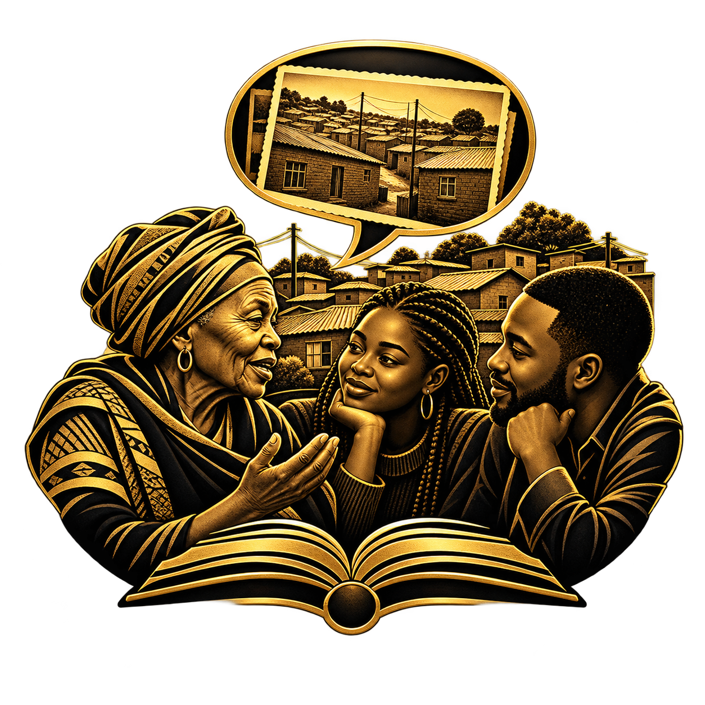
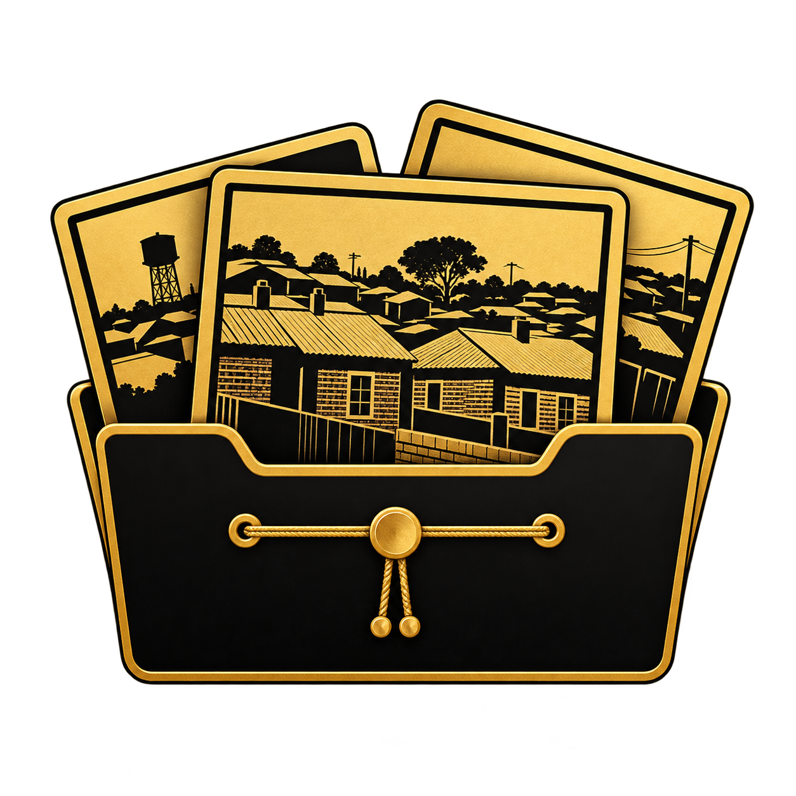

Beginnings
How a community took shape
Explore the origins of Alexandra, its settlement and the people who made it home.

Alexandra Digital History Archive
Explore the places, people and everyday stories that connect Alexandra’s past with its present.
Project image · Date and creator credit to be verified
Step inside01 / A living archive
Begin with a place, a person or a question. Discover the connections between Alexandra’s history and the community that continues to shape it.
This archive brings its past and present into conversation, making room for memory, creativity and everyday life.
Discover the purpose of the archive ↗02 / Through time
Follow the questions that guide our historical exhibition, from Alexandra’s beginnings to the living community of today.
Explore the archive ↗Beginnings
Explore the origins of Alexandra, its settlement and the people who made it home.
Memory
Discover the stories connecting streets, homes and community life across generations.
Today
Consider how everyday life, culture and aspirations continue the story.
03 / People & community
Behind every place are people: those whose names are widely known, and those whose daily contributions hold a community together.

Community stories
Discover the memories and connections at the heart of the archive.
Explore community themes ↗
Historical collections
Photographs, documents and personal memories can open different windows onto the past.
Enquire about contributing ↗Illustrative medallions from the existing project; these are decorative artworks, not historical artefacts.
04 / Places that hold memory
A street, a home, a familiar journey. Places connect personal memories to the wider life of Alexandra.
Discover the archive’s themes ↗05 / An open invitation
Memory belongs to the people who carry it. Share a possible story, ask a question or help us understand material connected to Alexandra.